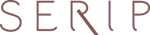

Светильники фабрики Contardi
Подвесной светильник Contardi CALYPSO ANTIGUA
Подвесной светильник на арматуре из матовой латуни.
Текстильный абажур выполнен из шелка черного цвета с бежевой и бордовой вставкой.
Золотой кант на абажуре. Высота светильника регулируется до 200 см.
Дизайн: Servomuto.
Материал: Металл / Текстиль
Количество лампочек: 1
Мощность: 1 x 23 Вт
Тип лампы: Накаливания, E27
Габариты(ВхШхГ): 60 x 36 x 36 см
Настенный светильник Contardi MANHATTAN AP bronze
Настенный светильник из коллекции MANHATTAN выполнен из металла бронзового цвета.
Световой поток можно менять, врящая светильник в разные стороны.
Дизайн: Alltogether
Материал: Металл
Количество лампочек: 1
Мощность: 1 x 3 Вт
Тип лампы: LED
Габариты(ВхШхГ): 12.5 x 42 x 4 см
Настенный светильник Contardi FLEXILED AP L60 nickel
Настенный светильник из коллекции FLEXILED выполнен из никелированного металла.
Светильник с выключателем на основании.
Дизайн: King&Roselli
Материал: Металл
Количество лампочек: 1
Мощность: 1 x 3 Вт
Тип лампы: LED
Габариты(ВхШ): 60 x 5 см
Настенный светильник Contardi MANHATTAN AP nickel
Настенный светильник из коллекции MANHATTAN выполнен из никелированного металла.
Световой поток можно менять, врящая светильник в разные стороны.
Дизайн: Alltogether.
Материал: Металл
Количество лампочек: 1
Мощность: 1 x 3 Вт
Тип лампы: LED
Габариты(ВхШхГ): 12.5 x 42 x 4 см
Настенный светильник Contardi LALA AP wenge
Настенный светильник с оригинальным дизайном из коллекции LALA на никелированном основании в деревянной рамке цвета венге.
Плафон выполнен из ткани белого цвета.
Внутренняя стенка светильника зеркальная.
Дизайн: Stephanie du Mesnil.
Материал: Дерево
Количество лампочек: 2
Мощность: 2 x 28 Вт
Тип лампы: Накаливания, E14
Габариты(ВхШхГ): 60 x 17 x 14.5 см
Настенный светильник Contardi LALA SOLIFLOR brown
Настенный светильник с оригинальным дизайном из коллекции LALA в деревянной рамке черно-коричневого цвета.
Плафон выполнен в виде прозрачной колбы, в которой можно расположить красивый цветок.
Внутренняя стенка светильника зеркальная.
Дизайн: Stephanie du Mesnil
Материал: Дерево
Количество лампочек: 1
Мощность: 1 x 3 Вт
Тип лампы: LED
Габариты(ВхШхГ): 60 x 17 x 12.5 см
Подвесной светильник Contardi CALYPSO GUADALOUPE
Подвесной светильник CALYPSO GUADALOUPE на арматуре из матовой латуни.
Текстильный абажур выполнен из шелка черного цвета с бежевой и серой вставкой.
Высота светильника регулируется до 200 см.
Дизайн: Servomuto.
Материал: Металл / Текстиль
Количество лампочек: 1
Мощность: 1 x 23 Вт
Тип лампы: Накаливания, E27
Габариты(ВхШхГ): 60 x 36 x 36 см
Подвесной светильник Contardi CALYPSO MARTINIQUE
Подвесной светильник CALYPSO MARTINIQUE на арматуре из матовой латуни.
Текстильный абажур выполнен из шелка бежевого цвета.
Высота светильника регулируется до 200 см.
Дизайн: Servomuto.
Материал: Металл / Текстиль
Количество лампочек: 1
Мощность: 1 x 23 Вт
Тип лампы: Накаливания, E27
Габариты(ВхШхГ): 60 x 39 x 39 см
Подвесной светильник Contardi MUSE DELUXE SO MEDIUM nickel
Подвесной светильник из коллекции MUSE на никелированной арматуре. Плафон в металлической серой рамке со створками из белой ткани. Высота светильника регулируется.
Дизайн: Tristan Auer
Материал: Металл
Количество лампочек: 1
Мощность: 1 x 150 Вт
Тип лампы: Накаливания, E27
Габариты(ВхШхГ): 40 x 40 x 40 см
Настенный светильник Contardi FLEXILED AP L90 brown
Настенный светильник из коллекции FLEXILED выполнен из металла бронзового цвета и обтянут кожей темно-коричневого цвета. Светильник с выключателем на основании
Дизайн: King&Roselli
Материал: Кожа
Количество лампочек: 1
Мощность: 1 x 3 Вт
Тип лампы: LED
Габариты(ВхШ): 90 x 5 см
Светильник настенный накладной Contardi KIRA TA


Светильники фабрики 
Подвесной светильник Serip CT3263/18-FO/29 + 27 + 26 + 24 + 22 + 15 + 10 + 5
Подвесной светильник из коллекции Bijout.
Дизайн в виде дерева со сплетением ветвей.
Цвет металла золотой. На ветвях сверкающие разноцветные подвески-капли из стекла ручной работы:
фиолетовые, розовые, пурпурные, зеленые, золотые, прозрачные.
Все стекло для светильников Serip изготавливается и формируется вручную.
Кстати, в стекле полностью отсутствует свинец и это сильно усложняет работу мастеров, так как именно свинец делает стекло эластичным.
Такое неэластичное стекло невозможно выдувать и фабрике пришлось разработать свои уникальные технологии работы со стеклом.
Отказ от свинца и замена его органическим аналогом является важным шагом для сохранения здоровья человека и экологии.
Высоту светильника можно регулировать от 110 до 335 см.
Идеальные пропорции и изящные линии сочетают в себе классические традиции и новаторство нашего времени.
Изделия Serip имеют органичные формы и цвета, вливаются в интерьер, делая его утонченнее и ярче.
Возможны другие варианты по цвету покрытия металла.
Серия: Bijout
Материал: Металл / Стекло
Количество лампочек: 18
Мощность: 18 x 40 Вт
Тип лампы: Галогенная, G9
Вес: 28 кг
абариты(ВхШхГ): 80 x 180 x 85 см
Потолочный светильник Serip CT3232/12-TA/10+25+4+18
Потолочный светильник из коллекции Glamour.
Дизайн в виде дерева со сплетением ветвей.
Цвет металла бронзовый.
На ветвях сверкающие разноцветные подвески-капли из стекла ручной работы: светло-зеленые, болотного цвета, золотые, прозрачные.
Все стекло для светильников Serip изготавливается и формируется вручную.
Кстати, в стекле полностью отсутствует свинец и это сильно усложняет работу мастеров, так как именно свинец делает стекло эластичным.
Такое неэластичное стекло невозможно выдувать и фабрике пришлось разработать свои уникальные технологии работы со стеклом.
Отказ от свинца и замена его органическим аналогом является важным шагом для сохранения здоровья человека и экологии.
Идеальные пропорции и изящные линии сочетают в себе классические традиции и новаторство нашего времени.
Изделия Serip имеют органичные формы и цвета, вливаются в интерьер, делая его утонченнее и ярче.
Возможны другие варианты по цвету стекла и покрытию металла.
Материал: Металл / Стекло
Количество лампочек: 12
Мощность: 12 x 40 Вт
Тип лампы: Галогенная, G9
Габариты(ВхШхГ): 85 x 120 x 120 см
Настенный светильник Serip AP1447/14-FP/39 + 33 + 32 + 10
Настенный светильник из коллекции Glamour выполнен из металла серебряного цвета.
Дизайн в виде дерева со сплетением ветвей.
На ветвях сверкающие разноцветные подвески из стекла ручной работы.
В этой модели присутствуют четыре цвета стекла: "Blue Sea" — морской волны, «Turquoise» - бирюзовый, «Lind Water» - голубой , "Clear" - прозрачный.
Все стекло для светильников Serip изготавливается и формируется вручную.
Кстати, в стекле полностью отсутствует свинец и это сильно усложняет работу мастеров, так как именно свинец делает стекло эластичным.
Такое неэластичное стекло невозможно выдувать и фабрике пришлось разработать свои уникальные технологии работы со стеклом.
Отказ от свинца и замена его органическим аналогом является важным шагом для сохранения здоровья человека и экологии.
Идеальные пропорции и изящные линии сочетают в себе классические традиции и новаторство нашего времени.
Изделия Serip имеют органичные формы и цвета, вливаются в интерьер, делая его утонченнее и ярче.
Возможны другие варианты по цвету стекла и покрытию металла.
Материал: Металл / Стекло
Количество лампочек: 14
Мощность: 14 x 40 Вт
Тип лампы: Галогенная, G9
Вес: 40кг
Габариты(ВхШхГ): 170 x 235 x 30 см
Светильники MULTIFORME
Контакты
Мы ждем Вас по адресу: Нахимовский проспект 24, ТВК Decor Expo, место Н2/1. Наш контактный телефон: 8(926)160-55-39